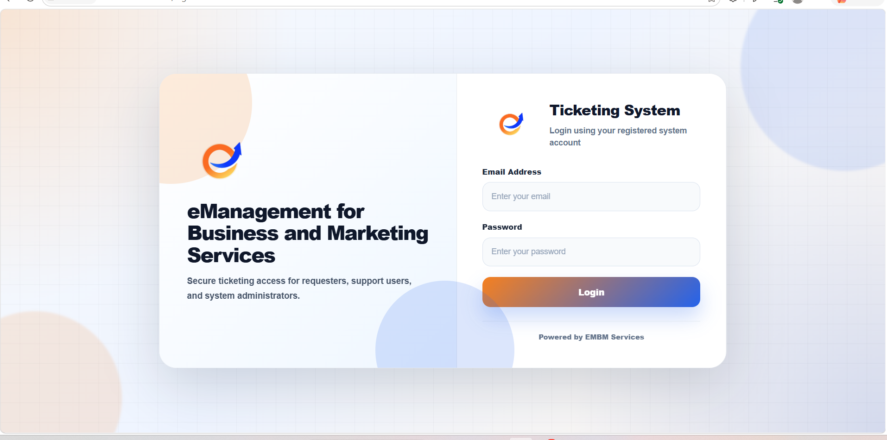
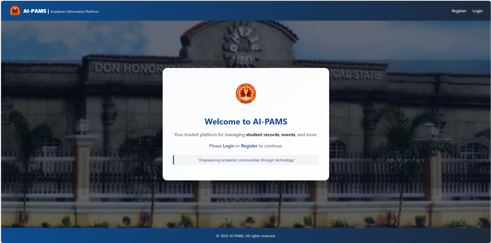
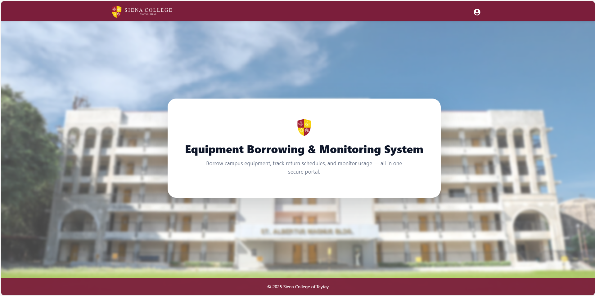
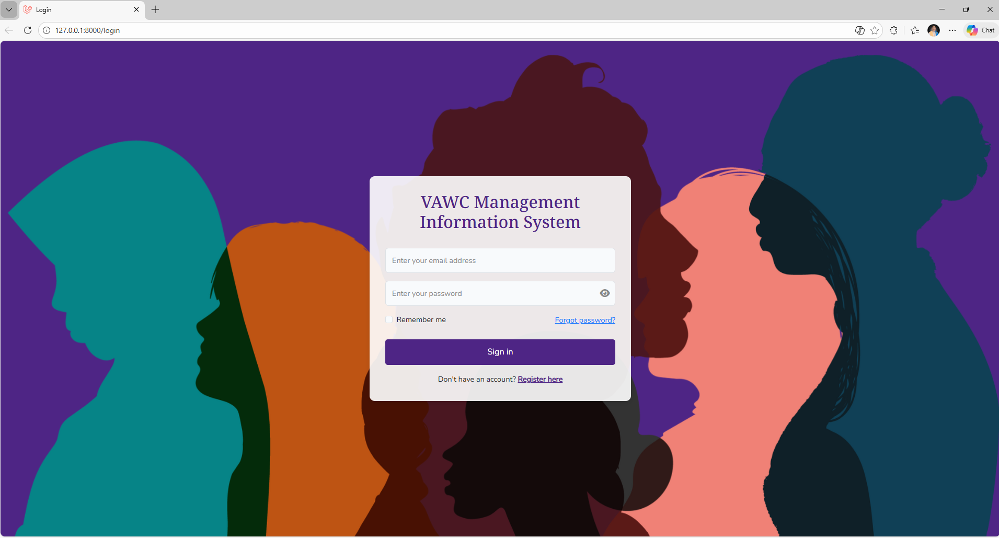
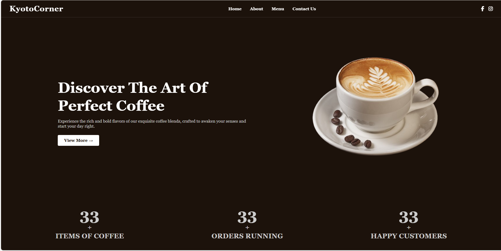
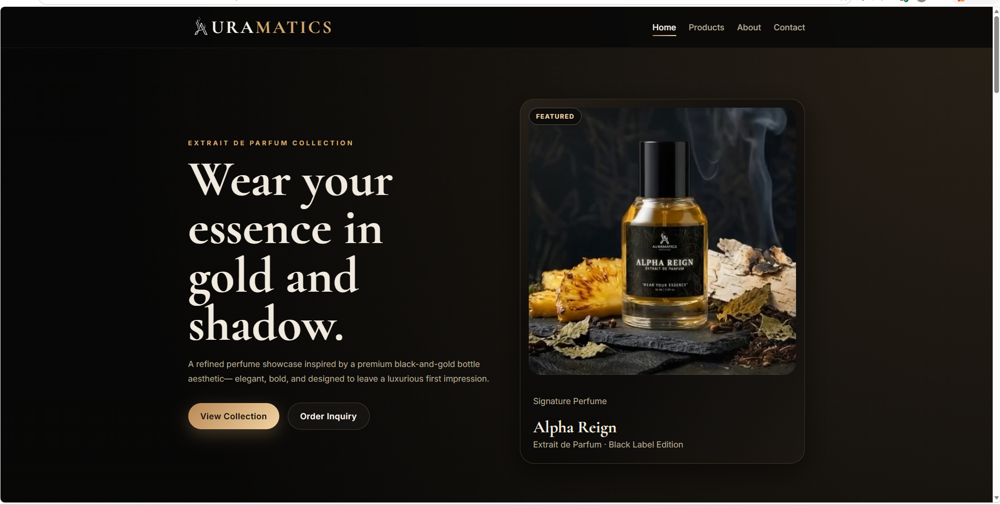
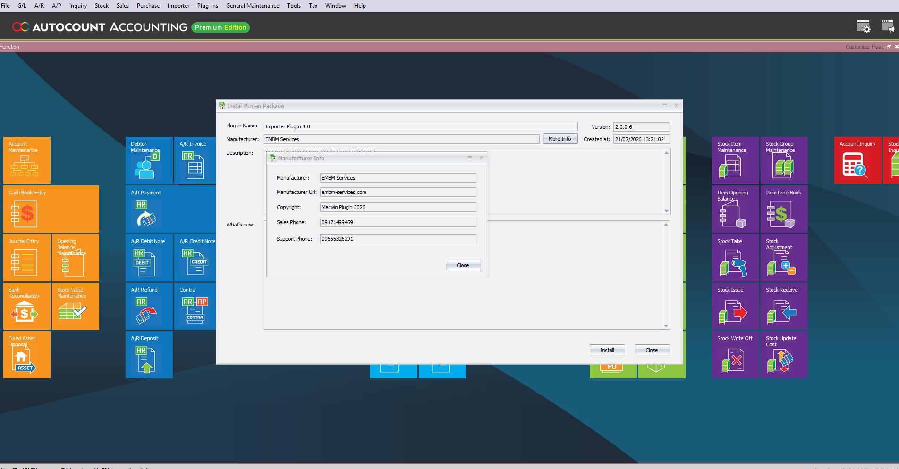
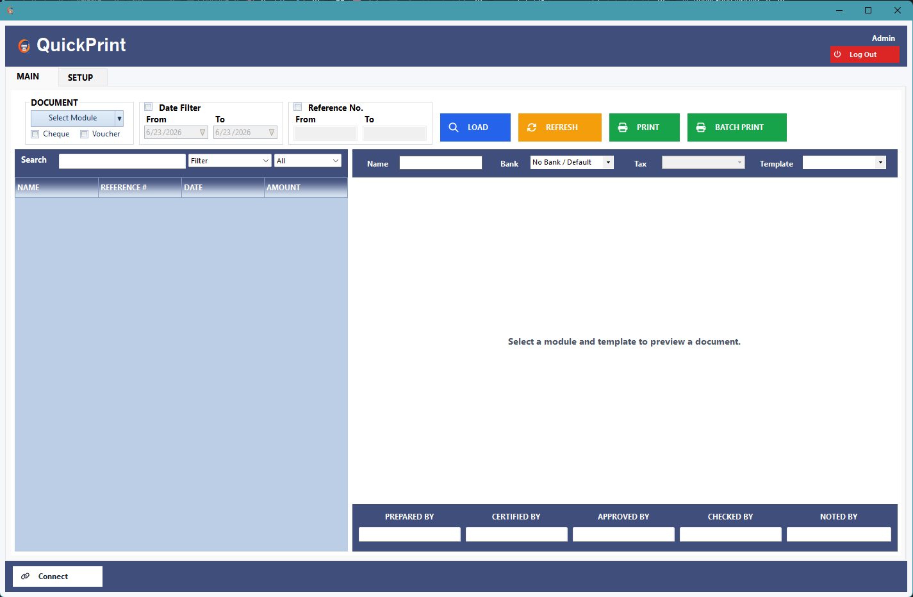

Full Stack Development
Building web interfaces, backend services, and database-driven applications, including APIs and workflow automation.
IT PROFESSIONAL · FULL STACK DEVELOPMENT
Software Development · System Integration · Technical Support
I develop web applications and business software solutions, integrate systems and databases, and support software deployment and troubleshooting. My work focuses on making technology practical, reliable, and useful for day-to-day operations.
01 · ABOUT ME
I am an IT professional with experience in full stack development, technical support, and system implementation. I work on both building applications and supporting the systems businesses use every day.
My development work includes web applications, APIs, SQL databases, system integrations, and business process automation using React, Node.js, Laravel, and related technologies.
I also handle system configuration, deployment, troubleshooting, and client support. I aim to deliver solutions that are maintainable, secure, and suited to the requirements of each organization.
Building web interfaces, backend services, and database-driven applications, including APIs and workflow automation.
Configuring and deploying business applications, connecting systems, and supporting integration with existing workflows.
Investigating technical issues, assisting users, maintaining applications, and supporting reliable daily operations.
02 · TECHNICAL SKILLS
Hands-on experience with web and mobile development, backend services, databases, cloud environments, accounting systems, deployment, and user support.
Creating responsive, accessible web interfaces using modern JavaScript frameworks and component-based development.
Developing server-side features, authentication, REST APIs, database operations, and application integrations.
Working with SQL and cloud databases for application data, queries, maintenance, integration, and reporting.
Building cross-platform mobile interfaces and cloud-connected application features with React Native.
Writing and maintaining application code for web, desktop, and integration projects.
Configuring virtual machines, deploying applications, and supporting cloud-hosted and on-premise systems.
Installing, configuring, extending, and supporting accounting and ERP systems to suit operational requirements.
Supporting users through software setup, technical issue resolution, system maintenance, and deployment assistance.
03 · WORK EXPERIENCE
Current role
Development & client systems
Technical training experience
04 · FEATURED PROJECTS
Examples of my work in business applications, academic systems, commercial websites, and accounting software extensions.

Open previewA role-based business support platform developed for requesters, support personnel, and system administrators. The system manages ticket creation, approval, assignment, progress monitoring, deadlines, notifications, reporting, employee scheduling, and completed support requests.

Open previewAn academic information platform designed to organize student records, school events, user accounts, and other administrative information through a centralized and secure web-based system.

Open previewA campus equipment management platform that handles borrowing requests, equipment availability, release and return schedules, borrower records, transaction monitoring, and equipment usage history.

Open previewA secure information management system designed to organize case records, user accounts, reports, and related documentation through controlled access and centralized data management.

Open previewA responsive promotional website for a coffee business featuring product highlights, menu navigation, business information, social media links, customer statistics, and a visually focused landing page.

Open previewA premium product showcase website created for a perfume brand, featuring a luxury black-and-gold visual identity, highlighted products, collection pages, product information, and customer inquiry actions.

Open previewA custom plugin developed for AutoCount Accounting to support data importing, record validation, accounting data processing, and client-specific automation. The integration extends the existing accounting platform without requiring users to leave the AutoCount environment.

Open previewA custom third-party on-premise reporting system developed for QuickBooks to generate business and accounting reports that are not available inside the standard QuickBooks interface. The application connects to QuickBooks data and uses Microsoft Report Builder for designing configurable report templates, document filtering, report preview, printing, and batch printing for client-specific reporting requirements.
05 · CERTIFICATIONS
Service operations and IT support fundamentals
06 · EDUCATION
Siena College
07 · HOW I CAN CONTRIBUTE
Available for employment, contract roles, and project-based work involving application development, business systems, integration, deployment, and IT support.
Developing responsive web interfaces, backend services, APIs, and database-connected applications based on project requirements.
Improving existing workflows through software customization, process automation, and practical business application features.
Connecting applications and third-party platforms, managing data exchanges, and developing reporting and integration features.
Assisting with application testing, configuration, deployment, issue resolution, documentation, and ongoing support.
08 · WORK WITH ME
I am open to full-time, contract, and project-based opportunities in software development, system implementation, and IT support. Get in touch to discuss your requirements or a potential collaboration.
Discuss a Role or ProjectFull-Time · Contract · Freelance · Project-Based
Remote · Hybrid · On-site
Rizal, Philippines